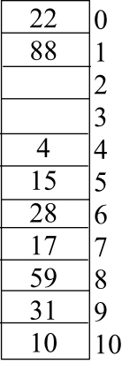
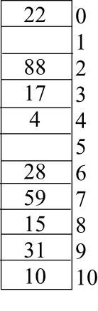
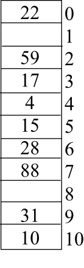

Inserting elements into Hash table
Given keys are 10, 22, 31, 4, 15, 28, 17, 88, and 59
Length of the Hash table, m = 11
Auxiliary hash function
Linear probing :
The hash function for linear probing . Where,
h (10, 0) = 10 mod 11
Hence, T[10] =10
h (22, 0) =22 mod 11=0
Hence, T[0]= 22
h (31, 0) = 31 mod 11 = 9
Hence, T[9]=31
h(4, 0) = 4 mod 11=4
Hence, T[4]=4
h(15, 0) =15 mod 11=4
But T[4] is already full, so the next probe slot T .
That is, h(15,1) = 15+1 mod 11 =5
Hence, T[5]=15
h(28, 0) = 28 mod 11=6
Hence, T [6]=28
h(17, 0) =17 mod 11
But, T [6] is already full, so the next probe slot T .
That is, h(17,1)= (17+1) mod 11=7
Hence, T [7] = 17
h (88, 0) =88 mod 11
But, T [0] is already full, so the next probe slot T .
That is, h(88,1) = (88+1) mod 11=1
Hence, T [1] = 88
h (59, 0) =59 mod 11
But, T [4] is already full, so the next probe slot T .
That is, h (59, 1) =(59+1) mod 11 =5 .
T [5] is also full. so the next slot to probe T .
That is, h (59, 2)=(59+2) mod 11 =6 .
T [6] is also full. so the next slot to probe T .
That is, h (59, 3)= (59+3) mod 11 =7 .
T [7] is also full. so the next slot to probe T .
That is, h (59, 4)=(59+4) mod 11 =8 .
Slot T[8] is available.
Hence, T[8]=59
After inserting the given keys using linear probing the hash table is as follows:

Quadratic probing:
Given auxiliary constants are = 1, = 3.
Quadratic probing hash function is
Auxiliary
h(10, 0) = (10+1.0+3.0) mod 11
= (10+0) mod 11
Hence, T [10]=10
h(22, 0) = (0 + 1.0 + 3.0) mod 11
= 0
Hence, T [0]=22
= 9
Hence, T [9]=31
h(4, 0) = (4+0+0) mod 11
Hence, T [4]=4
h (15, 0)= (4+0+0) mod 11
= 4
But, T[4] is already in use.
Next probe for slot T[h (15, 1)]. That is , i=1
= (4+1.1+3.12) mod 11
= (4 + 1 + 3) mod 11
= (8) mod 11
= 8
Since, T [8] is available, T [8]=15
h(28, 0) = (6 + 0 + 0) mod 11 =6
Hence, T [6]=28
h (17, 0) = (6 + 0 + 0) mod 11=6
T [6] is already in use.
So, probe for slot T[h (17, 1)]. That is, i=1
h (17, 1) = (6 + 1.1+ 3.12) mod 11
= (6 +1+3) mod 11
= 10 mod 11
= 10
T [10] is also in use.
So, probe for slot T[h (17, 2)]. That is, i=2
h(17, 2) = (6 + 1.2+ 3.22) mod 11
= (6 +2+12) mod 11
= 20 mod 11
= 9
T [9] is also in use.
So, probe for slot T[h (17, 3)]. That is, i=3
h(17, 3) = (6 + 1.3+ 3.32) mod 11
= (6 +3+27) mod 11
= 36 mod 11
= 3
Since, T [3] is available, T [3]=17
h(88,0) = 0
But T [0] is already full.
So, probe for slot T[h (88, 1)]. That is, i=1
h(88,1) = (0+1.1+3.12) mod 11
= (0 + 1 + 3) mod 11
= (4) mod 11
= 4
T [4] is also full.
So, probe for slot T[h (88, 2)]. That is, i=2
h(88,2) = (0+1.2+3.22) mod 11
= (0 + 2 + 12) mod 11
= (14) mod 11
= 3
T [3] is also full.
So, probe for slot T[h (88, 3)]. That is, i=3
h(88,3) = (0+1.3+3.32) mod 11
= (0 + 3 + 27) mod 11
= (30) mod 11
= 8
T [8] is also full.
So, probe for slot T[h (88, 4)]. That is, i=4
h(88,4) = (0+1.4+3.42) mod 11
= (0 + 4 + 48) mod 11
= (52) mod 11
= 8
T [8] is also full.
So, probe for slot T[h (88, 5)]. That is, i=5
h(88,5) = (0+1.5+3.52) mod 11
= (0 + 5 + 75) mod 11
= (80) mod 11
= 3
T [3] is also full
So, probe for slot T[h (88, 6)]. That is, i=6
h(88,6) = (0+1.6+3.62) mod 11
= (0 + 6 + 108) mod 11
= (114) mod 11
= 4
T [4] is also full.
So, probe for slot T[h (88, 7)]. That is, i=7
h(88,7) = (0+1.7+3.72) mod 11
= (0 + 7 + 147) mod 11
= (154) mod 11
= 0
T [0] is also full.
So, probe for slot T[h (88, 8)]. That is, i=8
h(88,8) = (0+1.8+3.82) mod 11
= (0 + 8 + 192) mod 11
= (200) mod 11
= 2
Since, T [2] is availble, T [2]=88.
h(59,0) = 4.
But T[4] is already in use.
h(59,1) = (4+1.1+3.12) mod 11
= (4 + 1 + 3) mod 11
= (8) mod 11
= 8
T [8] is already full.
h(59,2) = (4+1.2+3.22) mod 11
= (4 + 2 + 12) mod 11
= (18) mod 11
= 7
Since, T [7] is available, T [7]=59
After inserting the given keys using quadratic probing the hash table is as follows:

Double hashing:
Given that

h(10, 0) = (10 + 0. h2 (k) mod 11)
= 10
Hence, T [10]=10
h(22, 0) = (0 + 0.h2(k) mod 11)
= 0
Hence, T [0]=22
h(31, 0) = ((9 + 0.h2 (k) mod 11)
= 9
Hence, T [9]=31
h(4, 0) = (4 + 0.h2 (k) mod 11)
= 4
Hence, T [4]=4
h(15,0) = (4+0.h2 (k) mod 11)
=4
T [4] is already full.
So, probe for T[h(15,1)]
h(15,1) = (4+1. (1+ (15 mod 10)) mod 11)
= (4+6) mod 11
= 10 mod 11
= 10
T [10] is also full.
So, probe for T[h(15,2)]
h(15,2) = ( 4+2. (1+ (15 mod 10)) mod 11)
= (4+12) mod 11
= 16 mod 11
= 5
Since, T[15] is available, So, T[15]=15
h(28, 0) = ((6+0.h2 (k)) mod 11)
= 6
Hence, T[6]=28
h(17, 0) = ((6 + 0.h2 (k)) mod 11)
=6
T [6] is already full.
So, probe for T[h(17,1)]
h(17, 1) = ( 6+1. (1+ (17 mod 10)) mod 11)
= (6+8) mod 11
= 14 mod 11
= 3
Since, T[3] is available, T[3]=17
h(88, 0) = ((0+0.h2 (k)) mod 11)
=0
T[0] is already full.
So, probe for T[h(88, 1)]
h(88, 1) = ( 0+1. (1+ (88 mod 10)) mod 11)
= (0+9) mod 11
= 9
T[9] is already full.
So, probe for T[h(88, 2)]
= (0+18) mod 11
= 18 mod 11
= 7
Since, So, T[7] is available, T[7]=88
h(59, 0) = ( 4+0. (1+ (59 mod 10)) mod 11)
=4
T [4] is already full.
So, probe for T [h(59, 1)]
h(59, 1) = ( 4+1. (1+ (59 mod 10)) mod 11)
= (4+10) mod 11
= 14 mod 11
=3
T [3] is already full.
So, probe for T [h(59, 2)]
h(59, 2) = ( 4+2. (1+ (59 mod 10)) mod 11)
= (4+20) mod 11
= 24 mod 11
=2
Since, T[2] is available, T[2]=59
After inserting the given keys using quadratic probing, the hash table is as follows:


Double hashing uses a hash function of the form h(k,i)=(h1((k) + ih2(k))Mod M here,
h 1 and h2 are auxiliary hash function.
The value of h2(k) must be relative prime to the hash table size M for the entire hash table to be searched. Otherwise, m and h2(k) have greatest common divisor d>1 for some key k, then search for the key k only examine (1/d)th hash table.
Consider an example :
Here,
m is prime and let
h 1 (k) = k mod m
h 2 (k) = 1 + (k mod m’) here m’ is less than m
If k = 123456, m = 601, m’ = 600 then h1(k) = 92 and h2(k)= 347.
So, here first position 92 is examined and then every 347th slot (mod m) until the key is found.
Open – address – hash – table:
Consider the open-address hash table with the load factor α and uniform hashing.
Then according to theorem 11.6 the expected number of probes in an unsuccessful search is at most.
According to theorem 11.8 the expected number of probes in a successful search is at most.
Expected number of probes in unsuccessful search = (expected number of probes in successful search)

The above equation solved by newton’s bisection method as follows.
Let
Consider initial values for = 0.1 and
 =0.9.
=0.9.
From the above two values, It is clear that the value of
 is
between 0.1 and 0.9. So calculate the mid-point for 0.1 and 0.9 as
follows:
is
between 0.1 and 0.9. So calculate the mid-point for 0.1 and 0.9 as
follows:
Calculate as follows:
From the above value, it is clear that the value is between 0.5 and 0.9. So calculate the mid-point for 0.5 and 0.9 as follows:
Calculate as follows:
By proceeding in this way, the following table will be obtained.
|
Step |
α |
f ( α ) |
α i - α i-1 |
|
0.5 |
-0.1931 |
0.4 |
|
|
0.7 |
-0.0373 |
0.2000 |
|
|
0.8 |
0.3906 |
0.1000 |
|
|
0.75 |
0.1137 |
0.0500 |
|
|
0.725 |
0.0272 |
0.0250 |
|
|
0.7125 |
-0.0074 |
0.0125 |
|
|
0.7188 |
0.0093 |
0.0063 |
|
|
0.7156 |
0.0008 |
0.0031 |
|
|
0.7141 |
-0.0033 |
0.0016 |
|
|
0.7148 |
-0.0013 |
0.0008 |
|
|
0.7152 |
-0.0003 |
0.0004 |
|
|
0.7154 |
0.0003 |
0.0002 |
|
|
0.7154 |
0 |
0.0002 |
From the above table, the function is satisfied for the value of
=0.7154.
Therefore, the nonzero value of for
which the given condition is satisfied is 0.7154